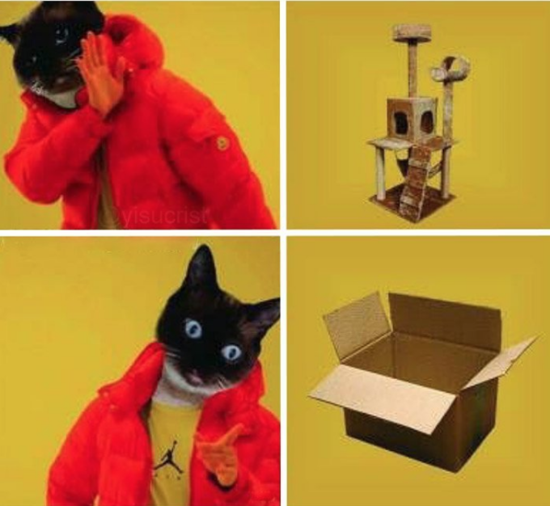

Drakeposting:
The "Drakeposting" meme template is used to show what a person likes or dislikes.
It is used with Drake himself pictured but can also be edited to represent another person. (Shown in the image below)
Origin:
The pictures originated from Drake's 2015 hit "Hotline Bling". One of the dance moves in the video shows Drake looking away in disgust while holding is hand next to his face.
The image was first used in mid 2015 on 4chan’s video games board.
Creative variations of the meme:
There other memes which are also used in the same way.
For example the one below, which shows a different meme which serves the same purpose.
The person shown on this picture is a character from the Islandic children's television programme LazyTown.
Here this person is used in the same manner as drake is used.
